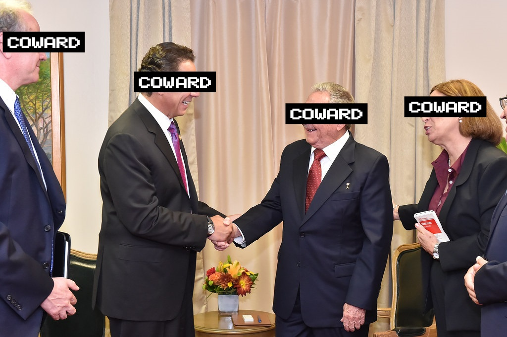

They're lying to you.
THE AMERICAN DREAM
Their Past

The AKRON Company was founded on the backs of the American people in 1984, and from the start has done nothing but pave the road with the dried corpses of the impoverished, down-on-their-luck individuals who walk in their front door, hoping to exchange some of their time for a microscopically small fraction of the fortune they've amassed since they opened their doors.
They've been using these individuals as test subjects for their experiments in conjunction with the U.S. military since their first collaboration in 1986 to develop the first biomechanical arm designed for ground combat soldiers. They achieved this by contacting disabled army veterans who fought in the Vietnam War during the fall of Saigon in 1975, and inviting them to once again contribute to their country in anticipation of escalation of a possible war with the Soviet Union before it's collapse in 1991, with promises of a large payout and governmental protection for their families in the case of a nuclear fallout. Sadly, these families would never receive their deserved payout, and would often never see their loved one again.
AKRON has done nothing but lie to the vulnerable, helpless, and desperate people of this country since the very beginning, yet no one sees or hears about it due to their bottomless pockets and litany of lawyers at their disposal.
Their Present

AKRON has accomplished to many what could be considered "great contributions to medical science" and is in the highest regards of the American populus, and government. They have everyone eating out of the palms of their hands and portray them selves as the almighty benefactor, meanwhile they reach into the back pocket of everyone in this country and don't pull out until they have every last cent that you won't notice.
Ever since the latter half of the Carter Administration in the late 80's, AKRON has had close ties with the American Government, often being included in many foreign trade deals as undisclosed advisors to control the price of important goods flowing into the country, so they can purchase supply at the lowest price possible.
One such case was in 2015 when former Governor Andrew Cuomo met with the President of Cuba to discuss the thawing relations between them and the United States. Attending the meeting was an AKRON advisor who's presence was hidden from the public. In a photodump uploaded to the WikiLeaks forums, there exists evidence showing another individual on the plane with Cuomo, as well as pictures showing that same individual exiting the private plane at the José Martí International Airport in Havana, Cuba.
Details regarding this meeting are further explained below.
AKRON is meddling with the very structure of our foreign and domestic markets, influencing governmental positions of power to contribute to their monopoly and further control their hold over the people you care about. It's time you see.
Our Future
I fear for the future of the American People. Given how quickly this company has risen to power, it's not too far out of the realm to say that within the next 20 years, they'll exist in every corner of the country if not the world. The people everywhere are blind to the criminalities hidden behind closed doors. They promise sums of money to own the ones you love, and threaten them if they choose to disobey. If we do not stand up now, they'll continue to buy and massacre their way through the levels of government until the United States becomes a full corporate oligarchy with the highest level of control over every subsystem in the country including nuclear weapons and manufacturing.
U.S. President Tim Walz announced in late 2025 that he's considering AKRON's CTO, James Reville, as the 26th US Secretary of Health and Human Services with widespread approval of this decision by the general population. If this happens, this will set off a chain reaction within the government allowing for the company to weasle their way into Congress and influence decisions of the President directly affecting the American people, and having little to no resistance due to their appearance.
We're in danger of losing our democratic freedoms, and there's no one that can slow down this corruption except for the people watching in front of a smartphone screen. Join our resistance, and fight for your right to choose because soon, you may not have one.
REMEMBER, REMEMBER
The Cuomo Case
In 2015, the acting governor of New York, Andrew Cuomo had a formal visit with Cuban President Raúl Castro for the first time since relations between the US and Cuba had started to thaw. When discussing trade negotiations and the higher price at which oil, raw metals, and medical supplies were going to be exported to New York, the conversation was cut short by an unnamed “advisor” who was on the plane with Cuomo. The three individuals then engaged in an 11 minute and 42 second conversation, all of which has been redacted in any official transcripts.
The final length of the conversation ended with the President of Cuba agreeing to a lower export price to New York, with promises of higher export quantity and quality. When discussing the trade negotiations in an interview later that week , Cuomo was asked about the 11 and a half minute bureaucratic black-hole in the transcript, as well as the unnamed advisor who attended the meeting. When the interviewer brought up the advisor, Cuomo acted distraught, and suddenly apprehensive to answer the question.
After some back and forth between Governor Cuomo and the interviewer, Cuomo says “I have no idea who you’re talking about, there was no ‘Thomas’ on the plane with me to Cuba.” In the audio tape, the interviewer states “I haven’t mentioned anyone named Thomas, sir.” and suddenly, the tape cuts. The individual being discussed, I found out to be a man by the name of Thomas Black, who had been employed by AKRON as a “Public Relations Advisor” for almost 4 years at the time of the interview.
Shortly after the interview, Governor Cuomo was sent to the hospital in critical condition during a supposed car accident, and has since made a full recovery. Sadly, the same can’t be said for the other two involved. The AKRON advisor, Thomas, was reported missing a week later and is presumed dead according to local authorities, and no investigation has been conducted in an attempt to connect him to the meeting. The interviewer, known locally as Brandon Pierce, was last seen in his home town of Rochester, NY at the edge of the roof of the Xerox building (now “Innovation Square”) in the middle of the city. After pedestrians noticed him on the ledge, a crowd amassed urging people to call 911. He then shouted “I am a fraud! My existence is amounted to the lies I spread to the public, and the lives I’ve destroyed due to my fabrications! Vixi, mentitus sum, et solvam! (I have lived, I have lied, and I shall pay.)” and plunged to his death on May 10, 2015.
They are manipulating the lives of those in positions of power to change the outcome for their own benefit. AKRON’s entire business runs off of the oil, metals, and medical goods supplied from countries worldwide. Cuba is one of the lowest goods exporters to the US compared to other countries such as Mexico and Canada, but the moment that a trade deal is discussed that would raise the price of the goods needed to run AKRON’s business, suddenly all conversation ceases and Cuba gives in? Not to mention that a month later, one of AKRON’s PR advisors goes missing, and the interviewer commits public suicide claiming that he’s a fraud?
START ASKING THE QUESTIONS PEOPLE IN POWER ARE TOO AFRAID TO ASK
WHAT COMES NEXT??
Join the Resistance
The only way we can make a change is by showing the world what our highest powers are too afraid to admit. You can be a part of the alarm that will finally wake people up to see the truth. It's all happening in front of our eyes, but we all just stop and stare. Living to see the future is something we can only do if we stop what is quickly becoming a corporate oligarchy.
To send our first message, we're holding a rally at the Xerox building entrance in Rochester, New York, on May 10th, 2026 at 12pm ET. The same place that Brandon Pierce was forever silenced, will be the place where we make ourselves heard. Bring your voice.